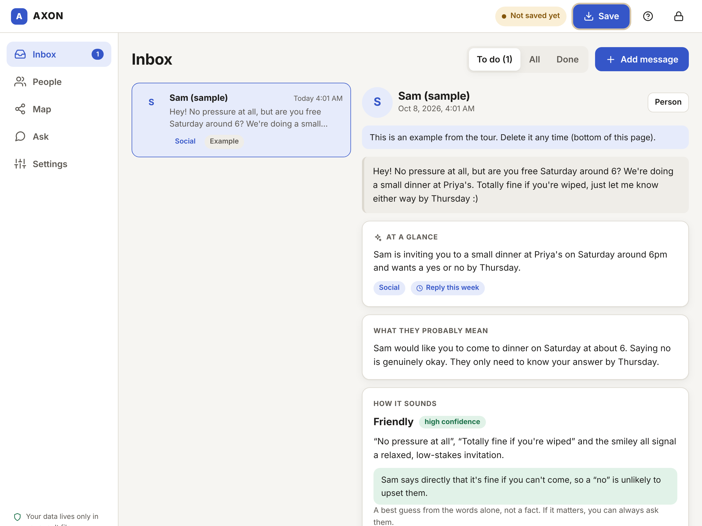
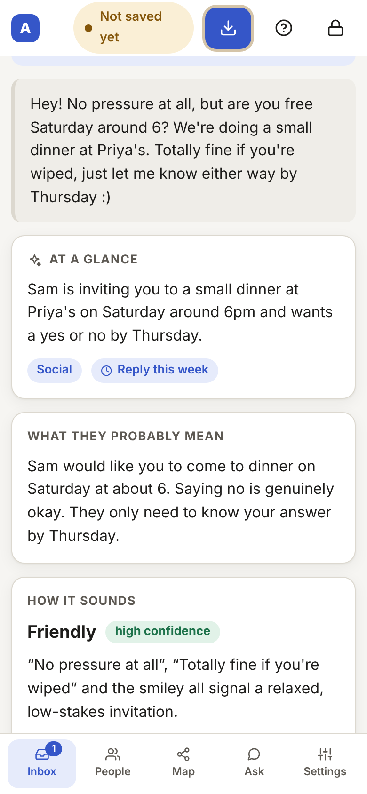
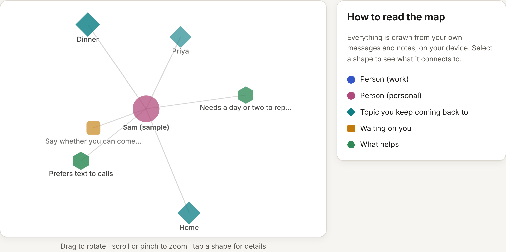

AXON explains the tone of a message, offers calm ways to reply, and remembers the people in your life. All of it lives in one private file that only you hold.

Made for neurodivergent people, people with social anxiety or the broader autism phenotype, and anyone who overthinks a reply.
Choose a passphrase. A few random words work well, like maple orbit quiet bicycle. Your vault is a single encrypted file. Nobody can read it without that passphrase, not even us.
Paste one in, or import a WhatsApp chat export. People are added for you automatically and grouped as Work or Personal.
Get a short summary, what they probably mean in plain words, how it sounds (with an honest confidence level), what they're asking, and three reply ideas written as you.
Press Save and your updated vault downloads as a file. Next time, open that file and carry on, exactly where you left off.
Files are named like axon-vault_r12_2026-10-07_1430.axon. The r12 is the revision, which goes up by one every time you save, and the rest is the date and time. Always open the highest number.
Hints, idioms and sarcasm are restated as exactly what's meant, in simple words.
AXON points at the exact words behind its read and says how sure it is. Low confidence means a coin flip. It never pretends to know what someone feels for certain.
WarmShort and simpleKind “not right now”
Written as you. Edit one, then copy it into your chat app.
Notes on how you know them, their history with you, what's still waiting for a reply, and a short “story so far”.
Record your own accommodations, like needs time to replyprefers text to calls and AXON shapes its reply ideas around them. They appear on your map too.
“What's the story with Sam?” “Who am I waiting to reply to?” AXON looks it up in your vault and shows how it found the answer. Plain keyword search needs no AI at all.


People, topics, things waiting on you and what helps each have their own shape, so colour is never the only clue.
Drag to rotate, or choose a calmer flat view or a plain text list. Nothing spins unless you ask.
Worked out locally from your own messages. No AI is needed to draw it.
Start from a preset for autism, ADHD or social anxiety, then change anything. These are comfort settings, not diagnoses.
Your message goes straight from your browser to your provider. Run a model on your own computer and nothing leaves it at all.
Just want to look around? “Try it free” uses a shared connection, if the site has switched it on.
Choose “Start a new vault”.
A one-minute walk-through with an example message. Nothing to set up.
Paste it in, then save your vault.